The Principles of Diagnostic Imaging
Stephen J Mather Barts and the London School of Medicine and Dentistry, Queen Mary University of London. s.j.mather@qmul.ac.uk
Khuloud T Al-Jamal Institute of Pharmaceutical Sciences University College London khuloud.al-jamal@kcl.ac.uk
Objectives for this Lecture
-
To teach the basic principles of diagnostic imaging with
- X-rays (planar and CT)
- Magnetic Resonance
- Ultrasound
- Radionuclide (SPECT and PET)
Imaging Employs Electromagnetic Radiation
THE ELECTROMAGNETIC SPECTRUM
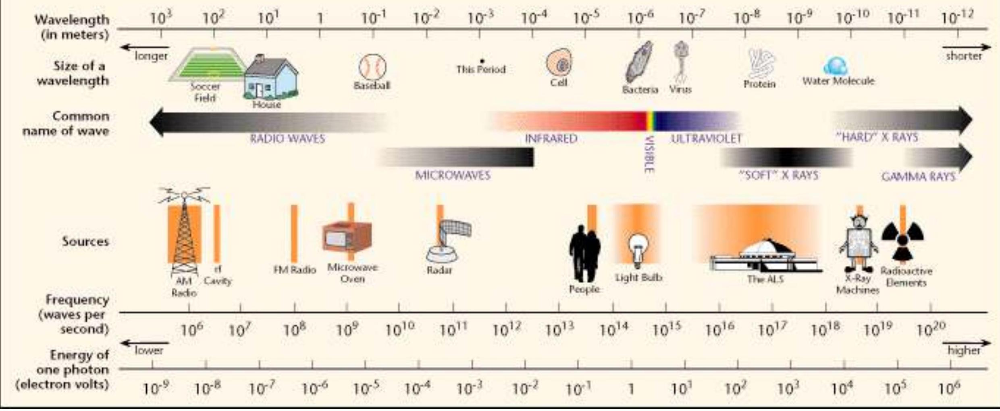Medical Imaging Modalities
- X-ray CT - (X-ray computed tomography) uses ionising radiation, source is external to the body. In some cases, contrast agents are injected. Anatomical images
- MRI (Magnetic resonance imaging) - uses magnetic fields and radiofrequency pulses to produce anatomical images. In some cases, contrast agents are injected. Also, fMRI
- US (Ultrasound imaging) - uses high frequency sound waves and the pulse echo effect (which is the basis of radar) to give anatomical information.
- Nuclear medicine imaging - uses unsealed radioactivity to produce functional images


 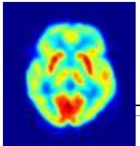
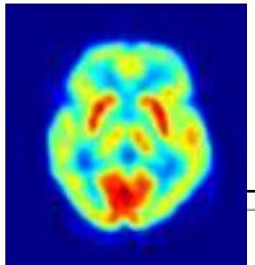
The Beginnings of Radiology
-
November 1895 - Roentgen discovered X-rays
- when experimenting with cathode ray tubes in a darkened room, he noticed a faint fluorescent glow emanating from a plate he had left on the bench
- when he moved to pick it up, he was amazed to see the image of the bones from his hand cast onto the plates
- the prospects for x-ray diagnosis were immediately recognised but Roentgen refused to patent his discovery
- Won first Nobel Prize in Physics for his discovery - 1901

Planar - X-ray

Early X-ray apparatus ~ 1920's
Modern direct capture Radiography

X-ray Tube

Production of Characteristic X-rays

Production of Bremsstrahlung X-rays

Process of Image Production
- X-rays produced
- X-ray photons are either: Attenuated, Absorbed, Scattered, Transmitted
- air < fat < fluid < soft tissue < bone < metal
- Transmitted X-ray photons (+some scatter) reaches the cassette and may interact with: Intensifying screens (produce light) or Film
- Latent image (i.e. undeveloped) produced which is then processed.
Producing a Radiograph

Digital Images

Direct Capture Radiography
- Direct capture Imaging System
- No Cassettes
- Amorphous Silicate used as detector material
- Similar to digital simulator/ treatment setup

Factors Affecting Radiograph
- Scatter
- Distance
- Movement
- kVp and mAs settings

The Normal CXR
- First of all is the film technically adequate?
- Correct area imaged ✓
- Inspiratory effort ✓
- Penetration ✓
- Rotation ✓
- Annotation ✓

 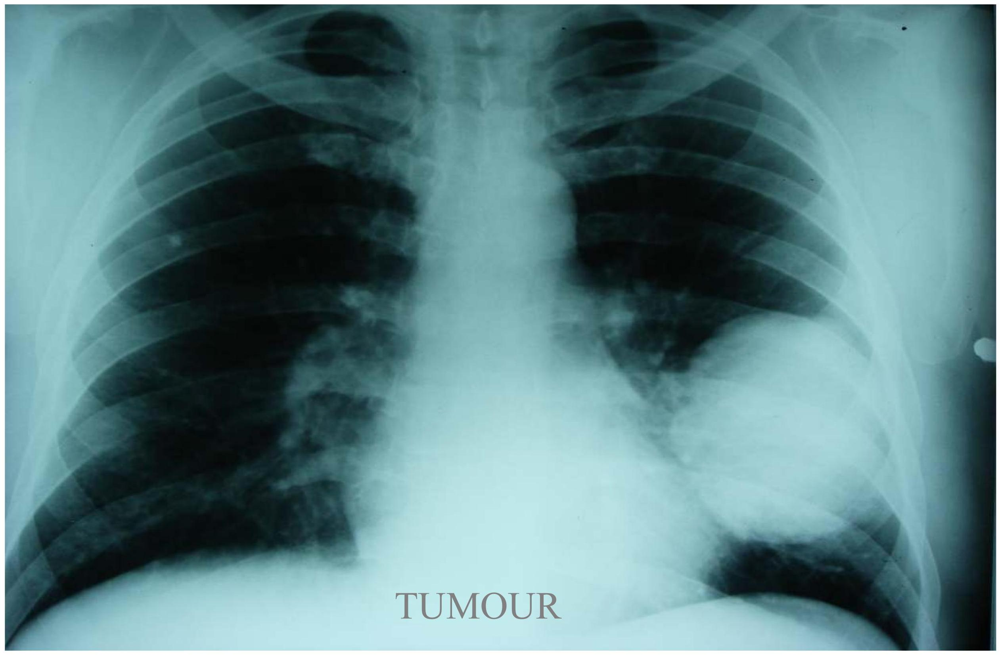
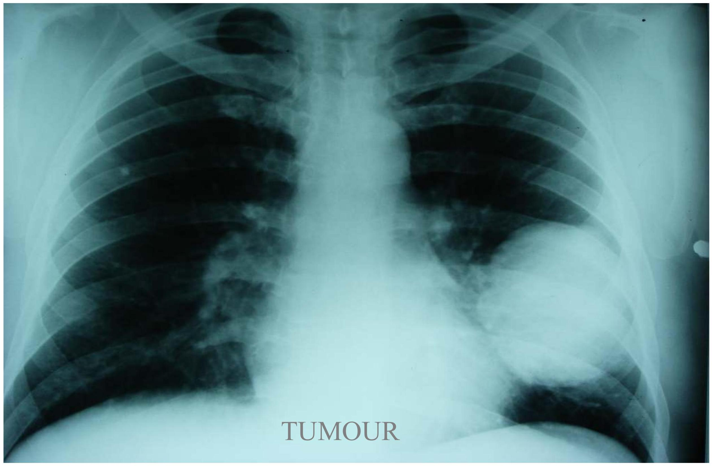
Aggressive- Fibrosarcoma


Fluoroscopy

Computerised X-ray Tomography


CT Numbers

Radiation Doses
- CT head 2.5 mSv
- CT chest 8 mSv
- CT abdomen 10 mSv
- CT pelvis 10 mSv
- chest radiograph PA 0.02 mSv
- abdomen radiograph AP 0.7 mSv
- pelvis radiograph AP 0.7 mSv
X-ray Contrast Agents
- substances with high atomic numbers have high density which is useful for X-ray contrast. Appear bright white in X-ray exams
- e.g. Barium (atomic number 56) causes considerable attenuation of X-rays compared with the soft tissues of the body (used for barium meals and barium enema's for diagnosis in the gastrointestinal tract) (Barium sulfate - inert) used mainly for plain radiographs
- Salts of iodine (atomic no. 53) are used as water soluble CT contrast agents. Can be injected intravascularly or into any cavity, sinus or tract. Can also give an indication of function e.g. filtration by the kidney. Can be toxic- allergic side effects.
Applications of Imaging in Cancer
- Diagnosis
- Staging
- Monitoring response
- Detection of recurrence
Diagnosis

Staging - Local Spread


Staging - Lymph Nodes

Staging - Distant Spread

Magnetic Resonance Imaging
- The newest imaging modality
- Principle used in spectroscopy since 1950s
- First human scan 1977
- Adopted for clinical use ~ 1988
- Approximately 300 in the UK (compared with approximately 500 CT scanners which have been around since 1971!)
Magnetic Resonance Imaging Advantages
- MRI gives superior soft tissue discrimination compared with CT: large differences in signals emitted from different soft tissues

Principle of MRI

The spinning single proton in a hydrogen atom creates a magnetic field and each hydrogen atom acts like a tiny magnet
Principle of MRI
In the absence of an external magnetic field Hydrogen nuclei magnetic moments are randomly oriented and have a net magnetization of zero.
In the presence of an external magnetic field hydrogen protons align themselves in one of two directions, parallel or anti-parallel to the net magnetic field producing a net magnetic field (Mo)

Precession
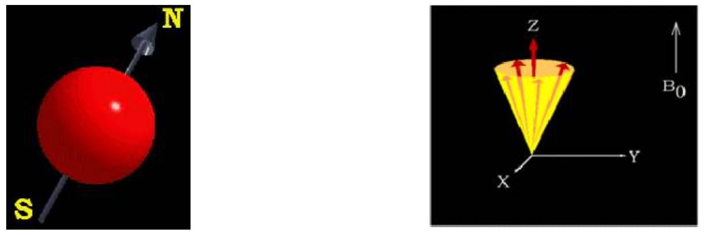The hydrogen atoms are not still but 'wobble' or 'precess' like a spinning top in the direction of the external magnetic field
Larmor (or precessional) frequency $\left(w_{\mathrm{O}}\right)=\mathrm{B}_{0} \times 1$
Where B0 is the magnetic field and 1 is the 'gyromagnetic ratio'
Resonance
If an RF pulse at the Larmor frequency is applied to the nucleus of an atom, the protons will absorb some energy and alter their alignment away from the direction of the main magnetic field .

As well as changing direction the protons also begin to precess 'in phase' resulting in a net magnetic moment transverse to the external field which induces a current and is detected in the transiever coil
Principles of MRI - Relaxation
When the RF is switched off, the protons:
- Give up the energy they have absorbed and start to return to their previous direction
- Start to precess out of frequency
With the result that
- Longitudinal magnetization gradually increases called T1 recovery
- Transverse magnetization gradually decreases called T2 decay
T1 and T2
The rate at which these processes occur vary from tissue to tissue


Imaging Parameters
The duration, repetition, timing and amplitude of RF pulse sequences are varied to produce signals which can be analysed in different ways in order to 'weight' the image.

T1 weighted

Proton density weighted
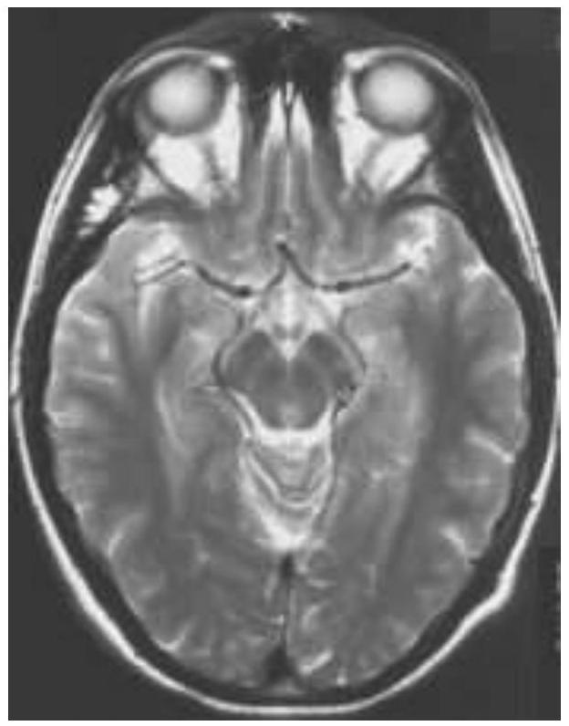T2 weighted
Signal Intensities on T1
High: Fat, bone marrow, contrast agents
Intermediate: Soft Tissues
Low: Water (urine, CSF)

Signal Intensities on T2

MR Contrast Agents
The most common contrast agents are Gadolinium chelates (DOTA, DTPA, DO3A etc) which interact with the water molecules in its vicinity to produce white areas in T1 weighted images
T2

T1 +Gd
Ovarian Cancer Within Endometrial Cyst
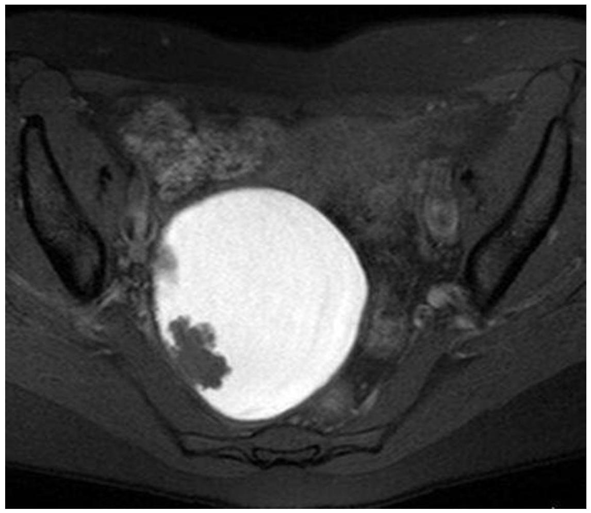Pre -Gd

Post Gd
Iron-Oxide Particles-Darken On T2

Malignant
Benign
Mn-DPDP - Brightens Liver On T1

T1

T1 + 'Teslascan'
Manganese(II)-dipyridoxal diphosphate (Mn-DPDP)
Magnetic Resonance Spectroscopy
- allows examination of individual molecules within a sample
- MRS can be used to study the biochemical nature of disease
- looks at concentrations of different substances in tissue to identify disease
- e.g. brain spectra can give concentrations of N -acetyl aspartate (NAA), creatine/phosphocreatine and choline. In patients with temporal lobe epilepsy, the levels of NAA are reduced and the levels of creatine/phosphocreatine and choline are increased in the diseased lobe
- e.g. lipid concentration can be used to grade tumours
Ultrasound Imaging
- Ultrasound imaging is based on the pulseecho principle, which is also the basis of radar
- It only came into use as a medical imaging technique after WW2 during which fast electronic pulse technology was developed
- first 2-D ultrasound scan in a living subject (of a myoblastoma in the leg) was carried out in 1951
- 1961 - first scan of pregnant abdomen
Diagnostic Ultrasound
- Ultrasound imaging uses ultra-high-frequency sound waves ( 3-10 MHz ). Human hearing - 20 to 20000 Hz
- a Piezoelectric transducer ( a "crystalline" material such as quartz that changes shape when an electric current is applied creating sound waves and when struck by sound waves creates electrical currents)
- ultrasonic waves are emitted by the transducer and travel through human tissues at a velocity of 1540 m s-1. When the wave reaches an object or surface with a different texture or acoustic nature, a wave is reflected back
- these echoes are received by the apparatus, changed into electric current and a 2-D image is produced
- more than 20 frames can be generated per second, giving a smooth, realtime image
Diagnostic Ultrasound Image
- The stronger the returning signal, the more white it will be on the grey-scale image (hyperechoic = white or light grey e.g. fat containing tissues)
- hypoechoic = dark grey (e.g. lymphoma, fibroadenoma of the breast)
- pure fluid gives no echoes, appearing black (anechoic) leading to acoustic enhancement of tissues distal to e.g. gallbladder and urinary bladder
- acoustic shadow is the opposite effect where tissues distal to e.g. gas containing areas, gallstones, renal stones receive little sound and thus appear as black

Ultrasound - Disadvantages
- interactive modality, operator dependent
- ultrasound waves are greatly reflected by air-soft tissue and bone-soft tissue interfaces, thus limiting its use in the head, chest and musculoskeletal system

Ultrasound image of gallstone (G) causing accoustic shadow (S). L = liver
Doppler Ultrasound
- Doppler effect: the influence of a moving object on sound waves
- object travelling towards listener causes compression of sound waves (higher frequency)
- object travelling away from listener gives lower frequency
- flowing blood causes an alteration to the frequency of the sound waves returning to the ultrasound probe, allowing quantitation of blood flow
- Colour Doppler shows blood flowing towards the transducer as red, blood flowing away as blue - particularly useful in echocardiography and identifying very small blood vessels
Nuclear Medicine
......the clinical application of 'unsealed' radioisotopes or 'radiopharmaceuticals'
The Discovery of Radioactivity
- In 1896, Henri Becquerel discovered that uranium (and its salts) emitted radiation
- 2 years later, Pierre and Marie Curie showed that uranium rays were an atomic phenomenon characteristic of the element, and not related to its chemical or physical state.
- They called this phenomenon "radioactivity"
- Becquerel and the Curies shared the Nobel Prize for Physics - 1903
- In 1931, Ernest Lawrence invented the cyclotron and it became possible to produce artificial radioisotopes
- 99 mTc was first produced by a 37 inch cyclotron in 1938
- the first nuclear medicine scan ( 131 Ithyroid) was carried out in 1948 (point by point)

Ernest Lawrence
- planar imaging using an Anger camera - 1957
- 1967 SPET with Anger camera (rotating the patient on a chair in front of the camera)
- 1978 - first commercial gamma-camera-based SPECT systems
- The beginnings of PET (the technique of counting gammas from positron annhilation) had come about in 1951 and images were produced in 1953

Hal Anger with his invention, the scintillation camera
Nuclear Medicine Imaging
- Three types of emissions from radioactive isotopes: $\alpha$ particles, $\beta$ particles and $\gamma$-rays (also some associated X-rays)
- only $\gamma$-rays are useful for radioisotope imaging (high energy photons)
- In radioisotope imaging, source is inside the body (X-ray CT - source is external).
Nuclear Medicine Principles
- Radiolabelled tracer (Radiopharmaceutical) is administered
- $\gamma$-rays (high energy photons) emitted by the radioisotope are detected outside the body on a 'Gamma camera'
- Lead 'collimators' are used to absorb scattered $\gamma$-rays
- $\gamma$-rays impinge on sodium iodide crystals (dense enough to stop the photons) and converted into light which is detected by photomultipliers.
Photon Detection
- photon is converted by scintillation crystal to flash of light
- Crystal is coupled to Photomultiplier Tube
- Photocathode converts light to electron.
- Electron avalanche leads to electronic pulse
PM tube
Crystal
Gamma-camera Principle

Functional Imaging
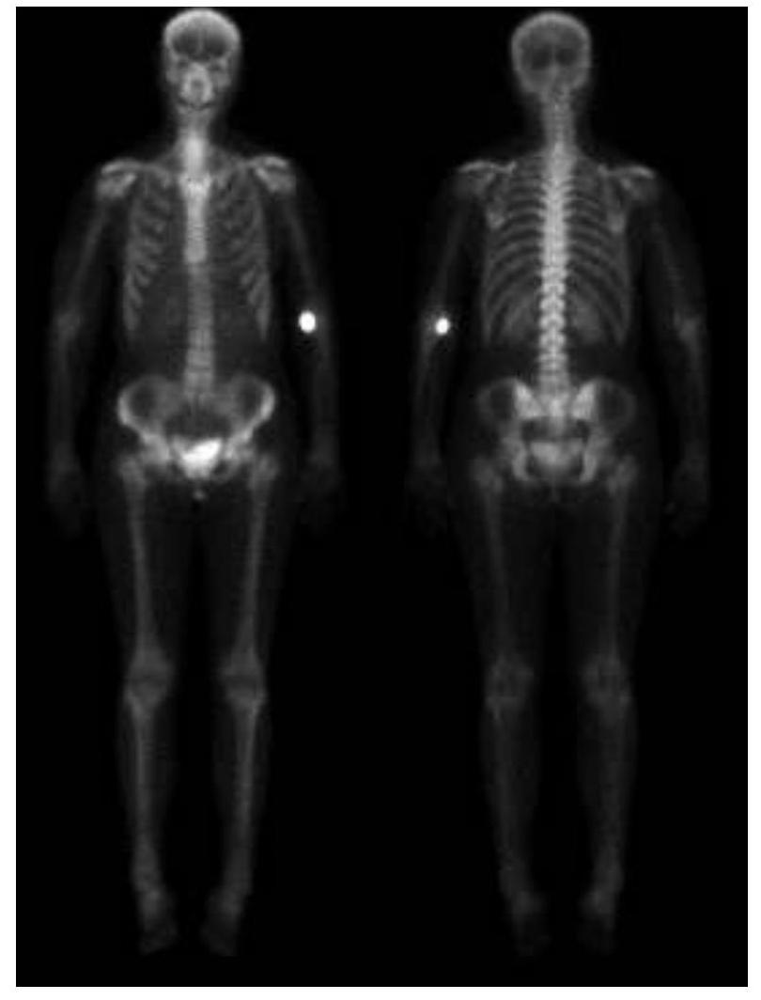Normal distribution of bone function

Abnormal distribution
Quantitative
Dynamic Acquisition
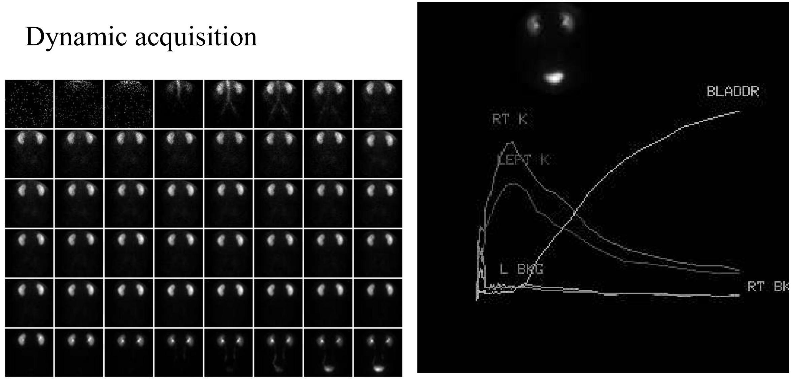 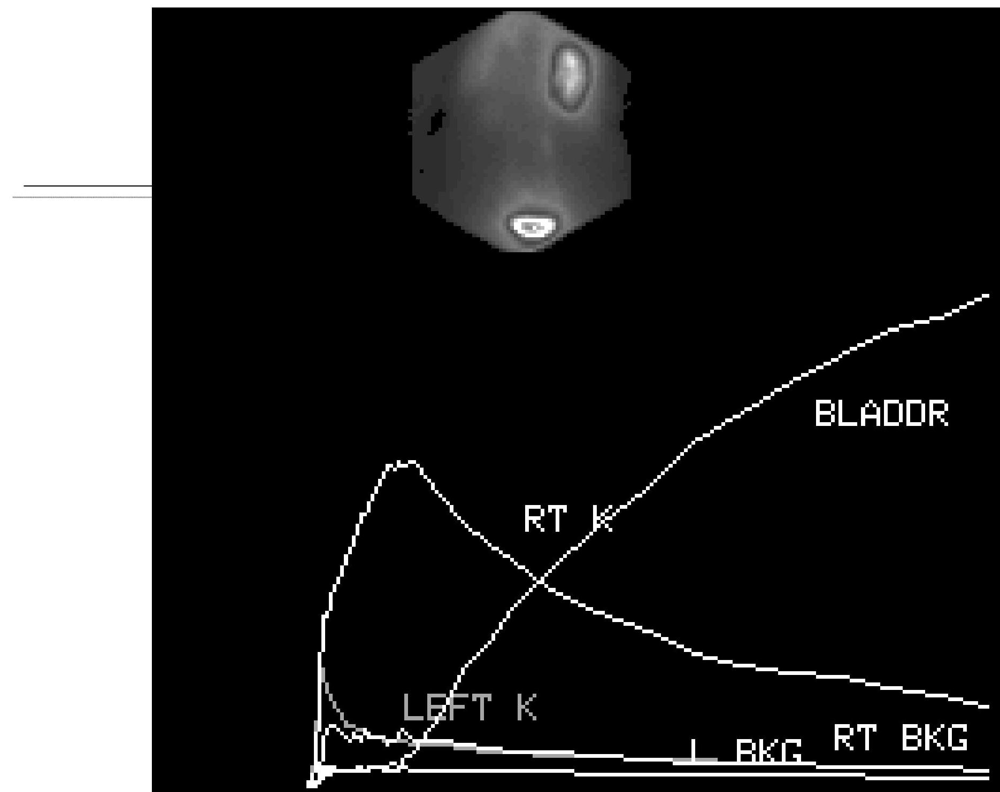Dynamic MAG-3 Kidney Transplant Study

Tomographic Acquisition (SPECT)

Myocardial Perfusion

3-D Rendering

SYSTOLE

DIASTOLE
Beating Mouse Heart
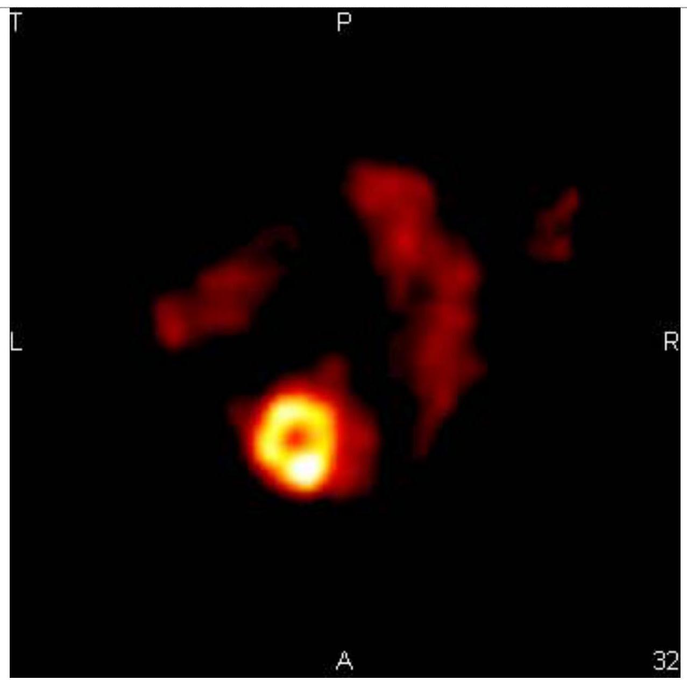Positron Emission Tomography (PET)
 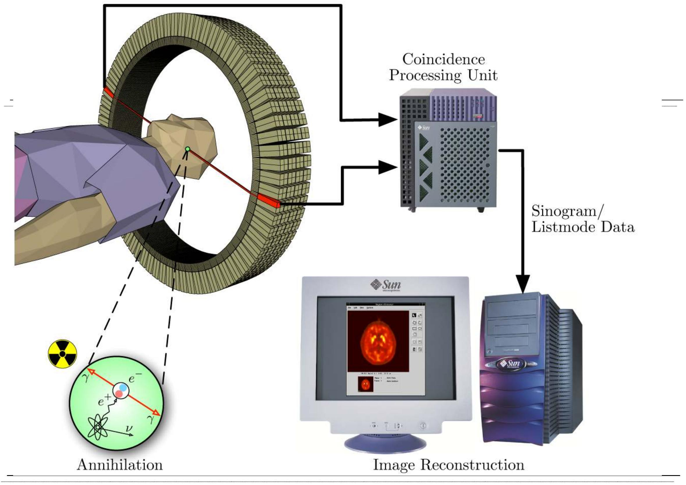
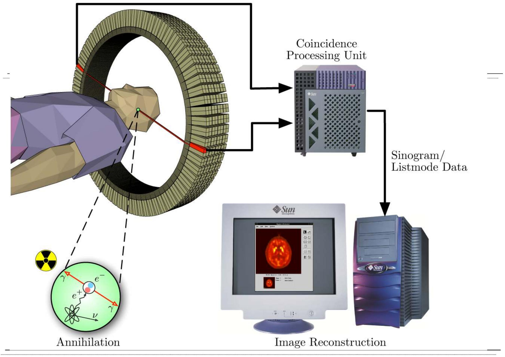
PET Coincidence Detection
- bismuth germanate (BGO) or Lutetium Oxyorthoscilicate (LSO) crystals
- No collimators
- High sensitivity
- Picomolar concentrations
- Absolute quantification (moles per microlitre)
Fluorodeoxyglucose -FDG

- Substrate for glucose transporters
- undergoes phosphorylation
- No further metabolism
FDG Shows Increased Tumour Uptake

Head and Neck
 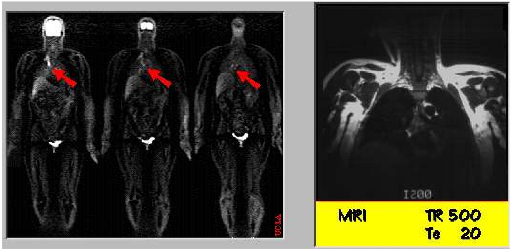
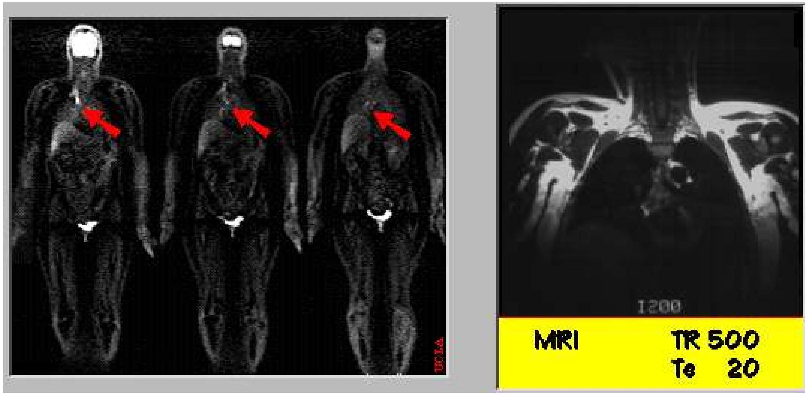
FDG-whole body PET showed increased glucose metabolism, highly suspicious for metastatic breast carcinoma. Fine-needle aspiration revealed metastatic adenocarcinoma. NOTE: MRI is negative

Gd contrast MRI

FDG-PET

Image overlay
Glucose metabolism is very low on the first PET study

Gd contrast MRI

FDG-PET

Image overlay
FDG-PET uptake has increased three months later. This suggests tumor recurrence, and effectively rules out radiation necrosis.
Biologically Relevant Radionuclides
From Kaschten et ala, JNM, 39 (1998), 778

CSCCC(N)C(=O)O
OCC1O[C@H](O)[C@@H](F)[C@H](O)C1O
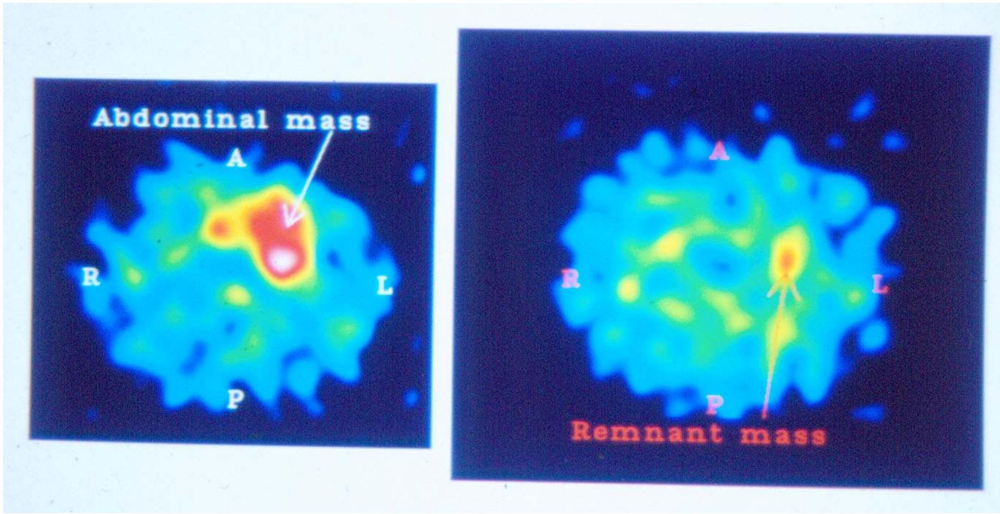
Comparison of PET and SPECT
- Biological isotopes can be used for PET
- High sensitivity (arising from coincidence detection) and betterimage resolution
- Collimators essential for SPECT (much of signal is lost)
- Attenuation correction in PET is simple - in SPECT it is v.complex
- PET can be quantitative
- Fast - detector ring in PET collects much more of the signal and no need for gantry rotation
However
- SPECT is much more commonplace and is cheaper than PET
- Access to a local cyclotron essential in PET

PET-CT - The Best of Both Worlds

Combines functional information from PET with anatomical location provided by CT
PET-CT Example
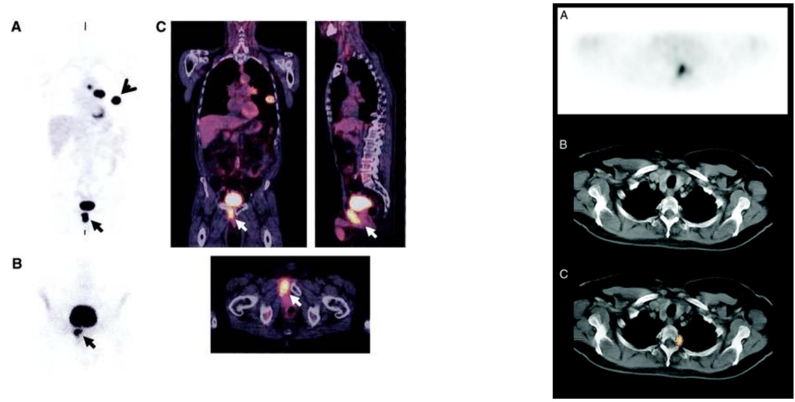PET/CT shows an area of increased uptake in the left nasopharynx and physiologic increased uptake inferior oral cavity and tongue.